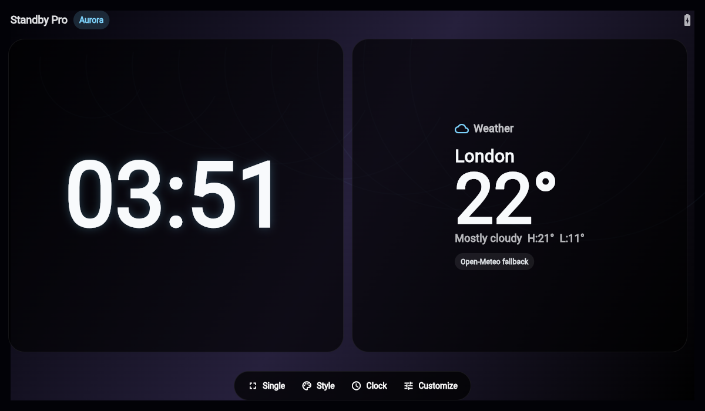

Historical source · 1.0.0
The original,
kept in view.
This archive preserves Standby Pro before its October 2026 improvements. All 83 app files are hash-verified against upstream commit 9ce5e167.

What is preserved?
Original Digital, Analog, Flip and Text clock faces; four themes; Single/Duo layouts; preference storage; Android foreground display-control attempts. The app code is preserved byte-for-byte. Documentation and licence notices are added separately. Third-party reference captures and their historical Git objects are excluded.
Source evidence, with limits
Flutter 3.41.9 / Dart 3.11.5: 10 original tests passed and analysis found no issues on Apple Silicon macOS. Independent recovery verifies all 83 hashes against the original upstream source and the source archive. No production APK/IPA or physical Android/iPhone acceptance is supplied.
The original weather is London-only and synthesizes high/low values. Calendar/music metadata is sample data. The Android charger-labelled control actually applies to the visible activity. iOS has no native display-control handler or system StandBy integration. The baseline retains those historical shortcomings; the improved app corrects the expectation and persistence gaps.
Reproduce
git clone https://github.com/Ghostzy0/standby-pro-baseline.git
cd standby-pro-baseline
git checkout v1.0.0-baseline.2
python3 verify_provenance.py
cd app
flutter pub get --enforce-lockfile
flutter test
flutter analyzeThe provenance check runs before Flutter generates local project files. JDK17/Android SDK are additional Android prerequisites; Xcode/CocoaPods and signing are required for iPhone work. The original Android release configuration uses debug signing and is unsuitable for production distribution.
Privacy & licence
The original automatically requests London weather from Open-Meteo, exposing IP and fixed city coordinates. Preferences remain local. It includes unused sensitive permission declarations, but no calendar/location integration. The improved app removes them and makes weather opt-in.
Original source is MIT. Full resolved dependency notices accompany the source. Open-Meteo data is CC BY 4.0; the free endpoint is for noncommercial use under provider terms. No external app's complete feature/layout/runtime fidelity is claimed.
Why baseline.2?
Independent recovery caught three ignored Gradle wrapper files missing from the first curated import. The manifest rejected that incomplete checkout. Baseline.2 restores their exact original bytes and retains app behaviour. Earlier tags/releases remain visible with a superseded notice.